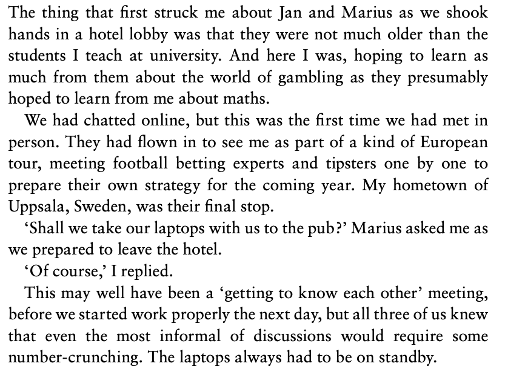
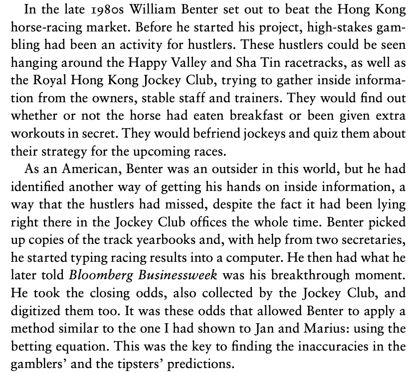
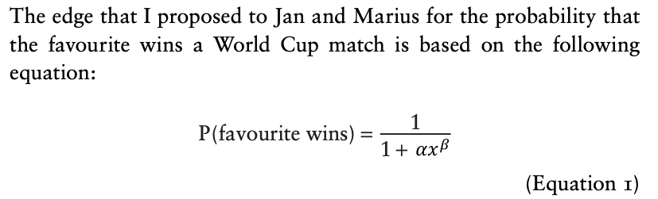
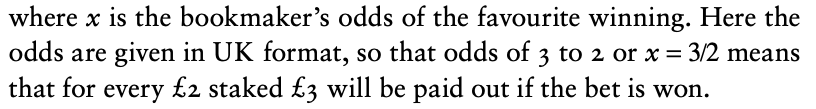

Introduction
{kind=link}
Let’s start the story where I started my book, with a visit from two soon-to-be professional gamblers…
{kind=link}
Marius and Jan wanted to learn about using equations in professional gambling. For my part, I wanted to learn how they worked and how they thought. I was also eager to try out an equation proposed by one of the most successful professional gamblers of all time, William Benter.
{kind=link}
In Chapter 1 of the Ten Equations, you can read more about how Benter made a billion dollars; how British gamblers, Matthew Benham and Tony Bloom followed a similar approach to football, allowing them to buy their childhood clubs Brentford and Brighton, respectively; and I meet Oxford statistician Sir David Cox who discovered the maths behind their approaches.
Now we will look in more detail at the equation that Marius, Jan and I used to make money on the 2018 Wrold Cup: The Betting Equation.
 {kind=link}
{kind=link}
We are going to start by learning the basics of odds and probabilities. Then, in section Fitting the model, we will learn how to load bookmakers odds in to Python and use the equation above to find a bias in the odds. Finally, we will look at the prediction the model makes for the World Cup 2022.